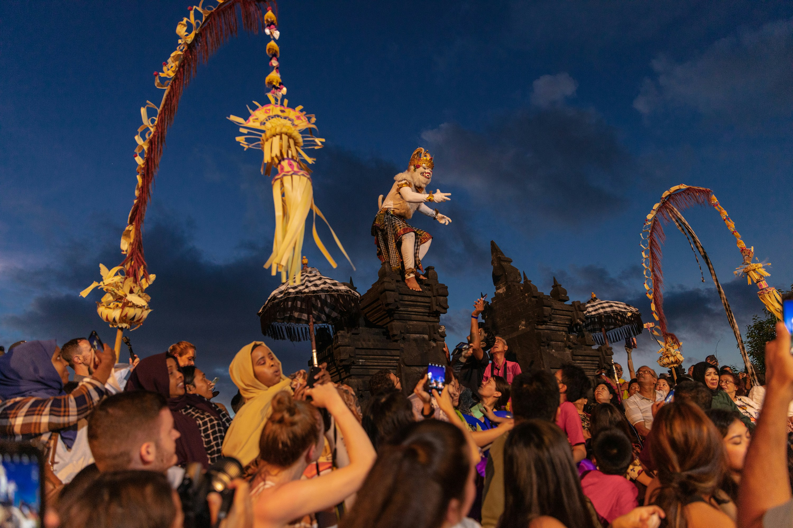
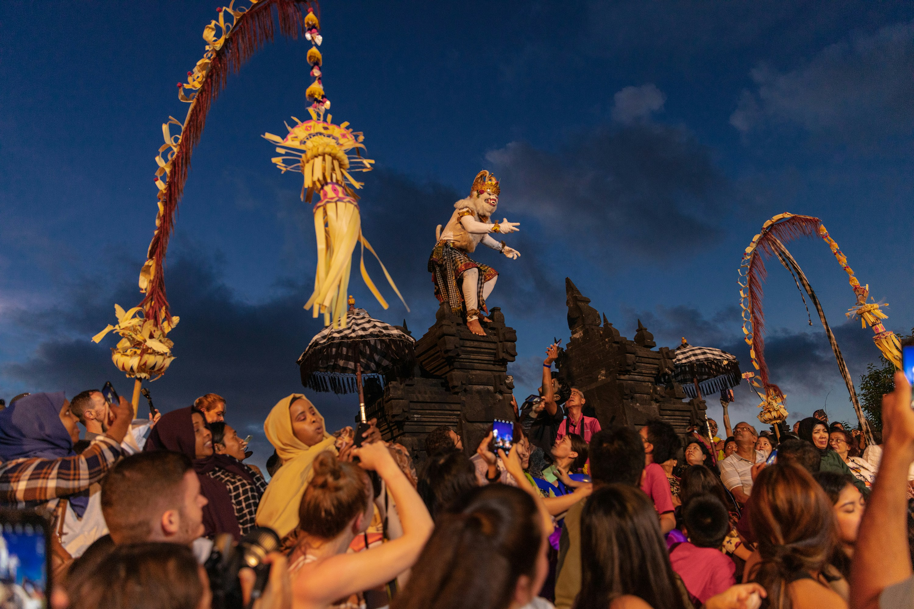

Top 3 Things To Do in Bali
Surf at Kuta Beach
As Kuta Beach remains as one of the most famous beaches of Bali, known for its godlen sand, energetic enviornment, and vibrant sunsets, this seems to be a good pick or starter for where to visit in Bali. Visitors who come can swim, surf, or even just sunbathe on the beachside while going to beachfront cafes and other vendors. A great spot for those enjoy both adventure or relaxation. Visit Odysseysurfschool.com!
 

Visit Uluwatu Temple
Perched high on a dramatic seaside cliff at 70 meters above the Indian Ocean, Uluwatu Temple delivers cultural fire dances and sunsets that’ll stop you in your tracks. Visitors can go see the ancient architecture, enjoy panaoramic ocean views, and watch the traditonal Kecak dance perforamnces that are at sunset. This is great for those interested in learning about the culture, history and scenery.
Explore Labuan Bajo
Explore Labuan Bajo: Located in the Western tip of Flores island in East Nunsa, it is also inside of the Komodo District where most Komodo dragons thrive and live. Also in Komodo National park, they have a pink beach where its colors come from red organisms , and whatnot which mixes with white sand. During Golden hour, it is framed for its essence of having a natural beauty and a breath-taking toursit destination. It's best to travel by boat and travel as a group to get the best experience!